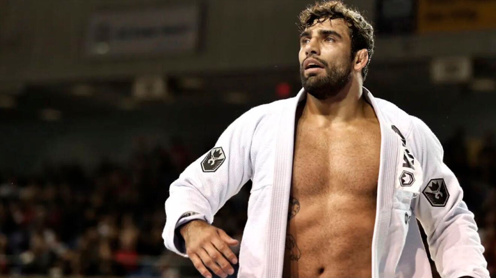

The Legendary Leandro Lo

One of Brazil's greatest Jiu-Jitsu champtions of all time, Leandro Lo,
has been declared brain dead after being shot in the head in a Sao Paulo club.
About the legend
- 8x IBJJF World Champion (2012 / 2013 / 2014 / 2015 / 2016 / 2018 / 2019 / 2022)
- 8x IBJJF Pans Champion[b](2012 / 2014 / 2015 / 2016 / 2017 / 2018)
- 5x UAEJJF Abu Dhabi Pro Champion (2011 / 2013 / 2014 / 2015 / 2016[)
- IBJJF European Open Champion (2017)
- 4x CBJJ Brazilian Nationals Champion (2011 / 2012 / 2017[)
- 3x CBJJ Brazilian Nationals No-Gi Champion (2011 / 2012)
- 4x Copa Podio Lightweight Grand Prix Champion (2011 / 2013 / 2014 / 2016)
- 2x Copa Podio Middleweight Grand Prix Champion (2012 / 2016)
- Copa Podio Heavyweight Grand Prix Champion (2016)
- CBJJ Rio International Open Champion (2011 / 2013)
- 2nd place Copa Podio Heavyweight GP (2014)
- 2nd place IBJJF World Championship (2017 / 2018[40] / 2019)
- 2nd place IBJJF World No-Gi Championship (2012)
- 2nd place IBJJF Pans Championship (2016 / 2014)
- 3rd place IBJJF World Championship (2015 / 2021)
- 3rd place IBJJF World No-Gi Championship (2012)
- 3rd place CBJJ Rio International Open Champion (2011)
For more information, check out Leandro Lo on Wikipedia. [ Developed by Mark Medrano. ]